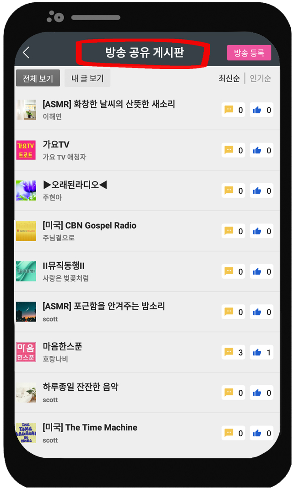
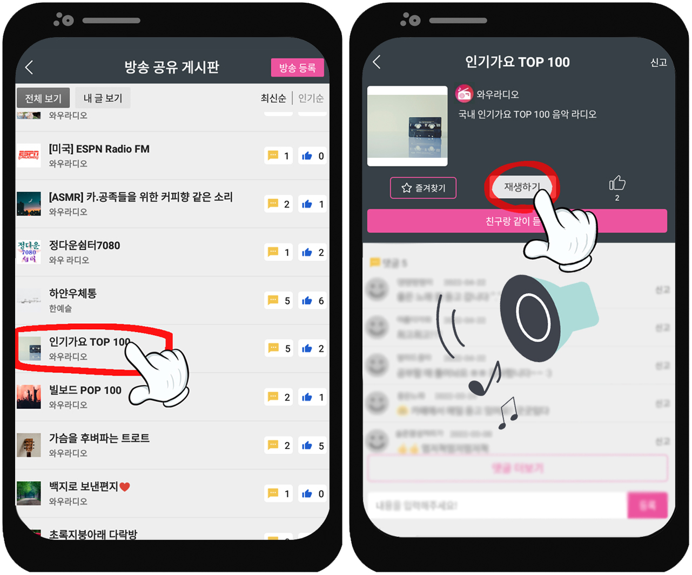
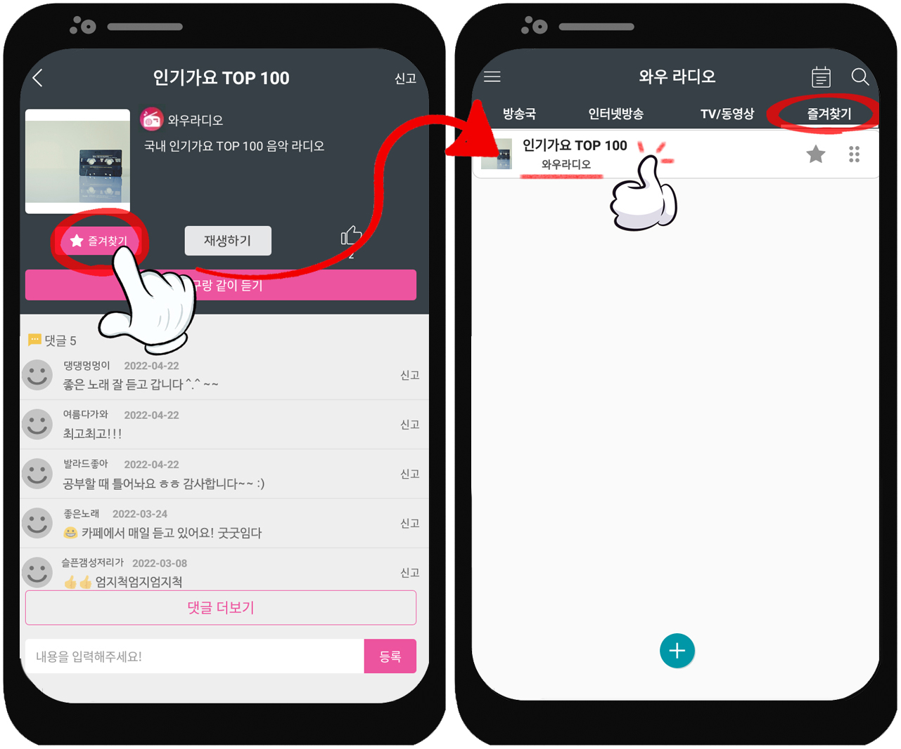
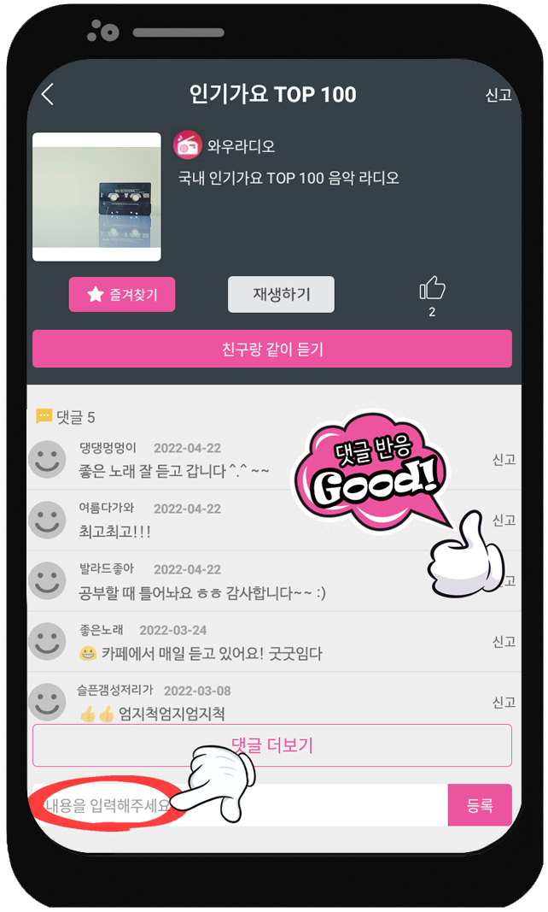
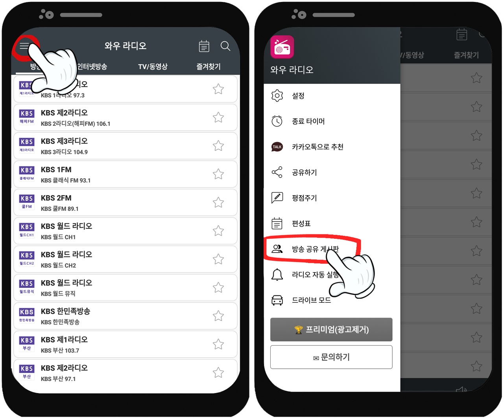
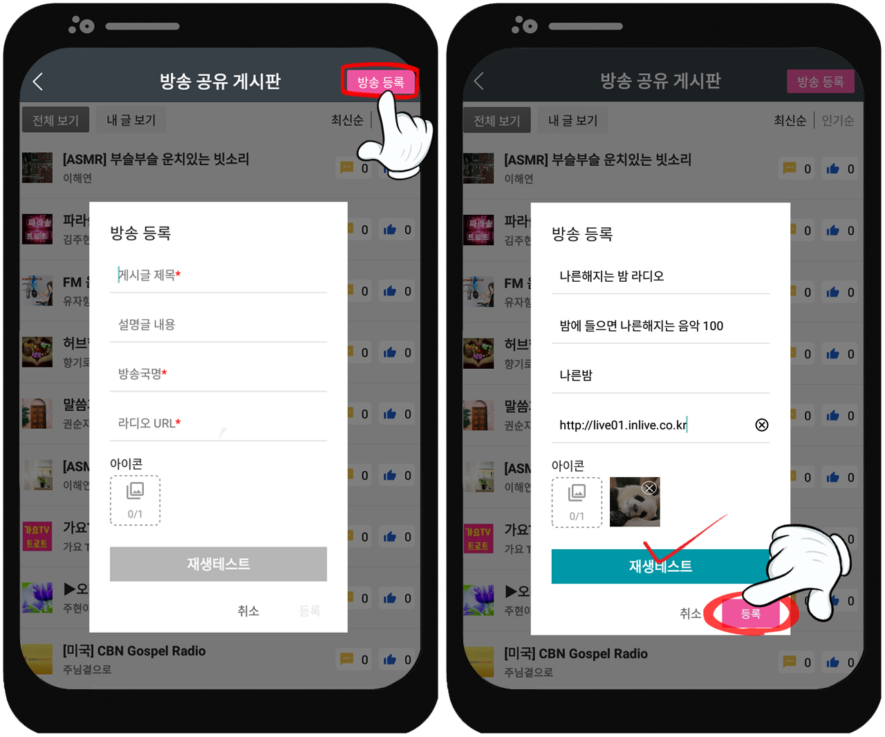

♬ 방송 공유 게시판 ♬
-
✎ 방송공유 게시판이 뭔가요?
와우 라디오 사용자분들께서 자신의 방송 또는 추천하고 싶은 방송을 업로드하여 공유하고, 자유롭게 소통할 수 있는 공간입니다 ෆ
 -
✎ 방송은 어떻게 듣나요?
1) 메뉴에서 [방송 공유 게시판]을 클릭해 주세요♡

2) 다른 사용자분이 올려주신 방송 중 마음에 드는 방송을 클릭✩
3) 듣고 있는 방송이 마음에 들었다면~? [★즐겨찾기]를 클릭해 추가해 주세요!

(이후부터는 [즐겨찾기]로 바로 가셔서 쉽게 들을 수 있답니다☺︎)TIP✩ 듣고 있는 방송이 마음에 드신다면 댓글도 자유롭게 남겨주세요♡
 -
✎ 방송은 어떻게 등록하나요?
1) 메뉴에서 [방송 공유 게시판]을 클릭해 주세요♡
2) 우측 상단 [방송등록]을 클릭! 방송 정보를 모두 입력한 후, [재생테스트]를 클릭하여 확인하고, 마지막으로 [등록] 클릭!!ෆ

(재생이 가능한 URL 형식이어야 등록이 가능합니다✩)정말 쉽죠~? 지금 바로 [방송 공유 게시판]을 즐겨보아요! 'ᴗ'♡